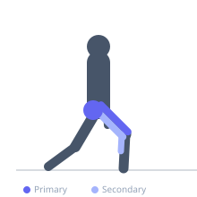

Exercise guide / Jump Lunge
Jump Lunge
The jump lunge is a plyometric exercise in which the lifter starts in a lunge position and explosively jumps into the air, switching the position of the feet mid-air to land in a lunge on the opposite leg. It trains explosive hip and knee extension power, cardiovascular conditioning, and single-leg landing mechanics. The continuous alternating nature makes it one of the most demanding bodyweight lower body exercises.
Primary muscles
rectus femoris
vastus lateralis
gluteus maximus
Secondary muscles
biceps femoris long head
gastrocnemius medial
Stabilizers
gluteus medius
tensor fasciae latae
transverse abdominis
Equipment
No Equipment (Bodyweight)


Starting position
- Begin in a lunge position with one foot forward and the rear knee just above the floor. Arms are bent at the sides or in running position.
Setup
- Ensure adequate ceiling height and clear landing space. Master the stationary lunge before progressing to the jump lunge.
Steps
- Step 1: Start in the bottom of a lunge with one foot forward, back knee near the floor.
- Step 2: Swing the arms explosively and drive through both feet to jump vertically off the ground.
- Step 3: While airborne, switch the position of the legs so that the previously rear leg is now forward.
- Step 4: Land softly by absorbing through the toes, then ball of foot, then heel — landing back in a lunge position.
- Step 5: Immediately upon landing, absorb and spring back up into the next jump.
Coaching cues
- Use your arms — they help drive the jump height
- Land soft like a feather — quiet feet
- Deep lunge on landing before you launch again
Breathing
- Breathe rhythmically — exhale sharply at takeoff, inhale during flight, absorb on landing.
Range of motion
- Lunge depth at both takeoff and landing should be near the bottom of a standard lunge.
Tempo
- Performed for time (20–60 seconds) or for reps with maximal effort on each jump
Common mistakes
- Landing stiff-legged instead of absorbing through the hip and knee — high injury risk
- Landing with the feet too close together, reducing stability
- Using too shallow a lunge on landing, reducing the eccentric braking benefit
Safety
- Land softly — impact forces during plyometric landing can be 3–5 times bodyweight
- Develop adequate single-leg strength before performing jump lunges
- Avoid on hard surfaces — rubber flooring or grass is preferable
Training
- strength: 5–10 reps
- hypertrophy: 10–20 reps
- endurance: 20–40 reps
- strength: 3–5 sets
- hypertrophy: 3–4 sets
- endurance: 2–4 sets
- Rest: {'strength': 120, 'hypertrophy': 60, 'endurance': 30}